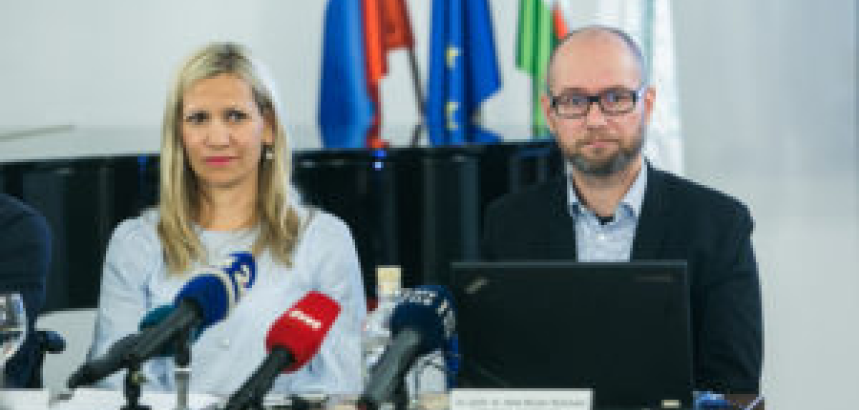

RAZISKAVA 2018: ŠTEVILO KRŠITEV UPADA, A STANJE JE ŠE VEDNO ZASKRBLJUJOČE
Objavljeno: Tuesday, 28. May 2019
V okviru kampanje »PARKIRAJ IZGOVORE DRUGAM! Ne na mesta, rezervirana za invalide.« je Fakulteta za varnostne vede Univerze v Mariboru pod vodstvom izr. prof. dr. Aleša Bučarja Ručmana izvedla ponovitveno raziskavo, s katero so partnerji kampanje želeli preveriti stanje na področju (ne)upravičenega parkirana na invalidskih parkirnih mestih.
Raziskava, ki se je izvajala konec leta 2018, je pokazala, da je delež kršitev na opazovanih parkirnih mestih v Ljubljani v primerjavi z isto raziskavo iz leta 2015 upadel za kar 58 odstotkov. A problematika je še vedno pereča, saj je odstotek kršiteljev še vedno visok, številni pa se za takšna dejanja odločajo tudi takrat, ko imajo v neposredni bližini prosta več kot tri »navadna« parkirna mesta.
Ponovitvena raziskava pod vodstvom izr. prof. dr. Aleša Bučarja Ručmana je vključevala neposredno opazovanje 43 invalidskih parkirnih mest na 9 lokacijah v Ljubljani, raziskovalci pa so izbrali tista parkirna mesta glede na ugotovitve prvotne raziskave iz leta 2015, kjer je bil zabeležen največji promet oziroma parkiranje vozil.
Ugotovitve raziskave so pokazale, da je bilo v opazovanem času na vseh parkirnih mestih za invalide zabeleženih 296 parkiranih vozil, med njimi je bilo 43 odstotkov takšnih, ki niso imela nameščena ustrezne invalidske kartice ter 57 odstotkov takšnih, ki so invalidsko kartico imeli. V primerjavi z letom 2015 je bilo v letu 2018 število kršitev na opazovanih parkirnih mestih bistveno nižje, in sicer kar 58 odstotkov. Obenem se je v primerjavi z 2015 za 6 odstotkov povečala upravičena uporaba teh parkirnih mest, torej s strani invalidnih oseb, zmanjšal pa se je delež mladih kršiteljev pod 30 let, in sicer za 12 odstotkov.
Med prevladujočimi kršitelji je še vedno največ moških, ki v večini neupravičeno parkirajo za kratek čas (kršitve do 15 minut so predstavljale 79 odstotkov vseh kršitev). Kot ugotavlja izr. prof. dr. Aleš Bučar Ručman, je stanje glede kršitev boljše na vseh opazovanih lokacijah, vendar daleč od idealnega – še vedno je 43 % neupravičenih parkiranj na rezerviranih parkirnih mestih in od tega največ tudi takrat ko so v neposredni bližini prosta več kot 3 »običajna« mesta (41,6 % vseh kršitev).
»Ponovitvena raziskava je pokazala, da se stanje izboljšuje, a še vedno kaže na veliko pomanjkanje družbene zavesti in solidarnosti v odnosu do invalidov in njihovega položaja v družbi. Skozi kampanjo in po pogovorih s številnimi upravičenimi uporabniki teh parkirnih mest vedno znova ugotavljamo, da gre za splošen družben problem, ki ga moramo nagovoriti na različnih ravneh,« je še dodal.
Ponovitvena raziskava in predstavitev rezultatov je ena od aktivnosti kampanje »PARKIRAJ IZGOVORE DRUGAM! Ne na mesta, rezervirana za invalide.«, s katero želijo partnerji ozaveščati o problematiki in posledično vplivati na spremembo vedenja slovenskih voznikov.
Do danes je kampanja postregla z vrsto aktivnostmi – od strokovnih posvetov in izkustvenih dogodkov za mlade voznike, ozaveščevalni video, pobudo za poostren nadzor nad parkirišči po celi Sloveniji in še več. Nosilec kampanje in vodja raziskave, izr. prof. dr. Aleš Bučar Ručman je projekt nedavno predstavil tudi na Univerzi na Malti, kjer bodo kampanjo vzeli kot izhodišče za načrtovanje svojih aktivnosti.
Pomembni partner kampanje je Javna Agencija RS za varnost prometa (AVP), kjer si želijo predvsem krepiti zavedanje, da se z ravnanjem neupravičenega parkiranja na invalidskih parkirnih mestih otežuje mobilnost in ovira infrastrukturo. Vesna Marinko, v.d. direktorica AVP, poudarja: »Ko govorimo o mobilnosti, govorimo o pravici posameznika, s čimer se krepita samostojnost in stopnja neodvisnosti. Posamezniki morajo razumeti, da ljudje na invalidskem vozičku ali z drugimi pripomočki za hojo za vstop v vozilo potrebujejo več prostora. Nerazumevanje tega v večini izhaja iz egoizma, pomanjkanja morale in empatije ter občutka večvrednosti drugih voznikov.
AVP je v okviru kampanje že sodelovala s pozivom na povečanje nadzora nad neupravičenim parkiranjem na invalidskih mestih v slovenskih občinah in letos bomo s tem nadaljevali. Verjamem, da lahko s tovrstnimi dogodki skupaj naredimo velike premike in dosežemo dolgoročen cilj.«
Tudi na Mestni občini Ljubljana sodelujejo v kampanji, kjer že izvajajo različne aktivnosti na področju vključevanja invalidov v širšo družbo. Sašo Rink, predsednik Sveta za odpravljanje arhitekturnih in komunikacijskih ovir na MOL izpostavlja: »Na Mestni občini Ljubljana sledimo in uresničujemo aktivnosti našega akcijskega načrta, v katerem so zbrani vsi ukrepi, ki se dotikajo dostopnosti in vključevanja invalidov v družbo. Treba je izpostaviti, da tukaj ne gre le za parkirna mesta, ampak tudi za ostalo infrastrukturo. Gre za ovire na javnih prostorih, ki onemogočajo mobilnost na splošno, ter za pomanjkanje empatije in pozornosti s strani posameznika na sočloveka. Verjamem, da se bo stanje in ozaveščenost s tovrstnimi projekti izboljšalo.«
Ozaveščevalne aktivnosti se tekom kampanje izvajajo tudi v sodelovanju s podpornimi organizacijami kampanje – z Zvezo paraplegikov Slovenije, Zvezo društev slepih in slabovidnih Slovenije, Zvezo Sonček – Zveza društev za cerebralno paralizo Slovenije, URI – SOČA, Zvezo za šport invalidov Slovenije – Paralimpijski komite in Varuhom človekovih pravic.
Mateja Toman
predsednica Društva distrofikov Slovenije
generalni direktor Univerzitetnega rehabilitacijskega inštituta RS - Soča
Mag. Robert Cugelj
Mag. Robert Cugelj
generalni direktor Univerzitetnega rehabilitacijskega inštituta RS - Soča
generalni direktor Univerzitetnega rehabilitacijskega inštituta RS - Soča
Mag. Robert Cugelj